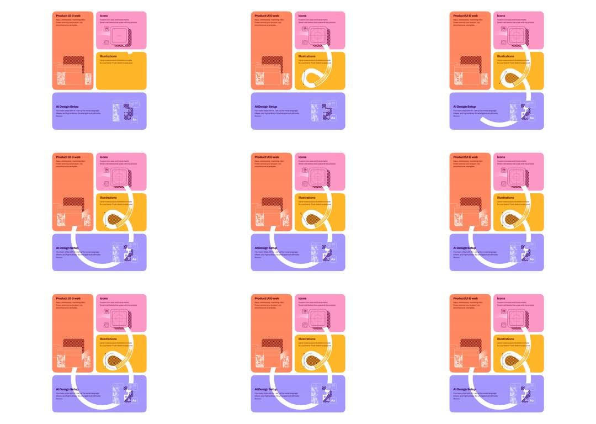

Static bento grid of 4 portfolio cards orbited by a single thick white stroke that continuously draws itself along a rounded scribble path looping around the cards.
Media
Frame-by-frame

0-15%
Grid settled: tall orange 'Product UI & web' card left, pink 'Icons' top-right, yellow 'Illustrations' below, wide purple 'AI Design Setup' bottom. A white stroke segment appears near the yellow card.
15-40%
Stroke head travels around the yellow card's left edge and sweeps across the purple card; tail follows at fixed arc length - comet-like moving segment.
40-65%
Segment loops through the gaps between cards, rounding corners with radii matching the 24px card rounding.
65-90%
Stroke continues around bottom-left and sweeps up the left side; cards never move - only the stroke advances.
90-100%
Segment completes the circuit; continuous constant-speed loop.
Build prompt
Rebuild this interaction 1:1: a static 4-card bento portfolio grid orbited by a single thick white stroke that continuously draws itself along a rounded scribble path looping around and between the cards, comet-style. The cards never move.
## Integration
Integration: stack-agnostic spec - springs given as stiffness/damping, timed motions as duration + curve, canvas/shader notes are perf guidance only; map every value to your framework and animation library of choice.
## Scene
Bento grid, 24px card rounding, small even gaps: tall orange "Product UI & web" card left; pink "Icons" top-right; yellow "Illustrations" below it; wide purple "AI Design Setup" spanning the bottom. Over the whole grid, one SVG path that tours the cards' perimeters and the gaps between them, its corners rounded to match the 24px card radius.
## Motion spec
Pattern: autoplay loop, single animated property.
- The stroke: 6-8px white rounded-cap segment, ~25-35% of the total path length visible at any time.
- Implement as a moving dash window: path with stroke-dasharray equal to [visible arc, remainder], animate stroke-dashoffset linearly so the segment travels the full circuit in ~6s, constant speed.
- Head leads, tail follows at fixed arc length; the segment sweeps around card edges and threads the gaps between cards.
- No other motion: cards, colors, and layout are perfectly still. No easing - linear throughout.
## Calibration
- Full circuit ~6s. Faster reads as a loading spinner; slower stops registering as motion.
- The segment length (25-35% of path) is what makes it read as a comet, not a drawing-on outline.
- Round the path's corners to exactly the card radius (24px) so the stroke hugs the cards.
## Reduced motion
Stroke renders static as a full closed outline at low opacity (white/40), no travel.
## Don't miss
- One continuous path for the whole grid - not per-card outlines animating separately.
- The stroke passes through the gaps between cards, weaving; a pure perimeter trace looks wrong.
- Constant linear speed, including around corners.
Mechanics
trigger
autoplay loop
elements
4-card bento grid, SVG overlay path spanning the grid